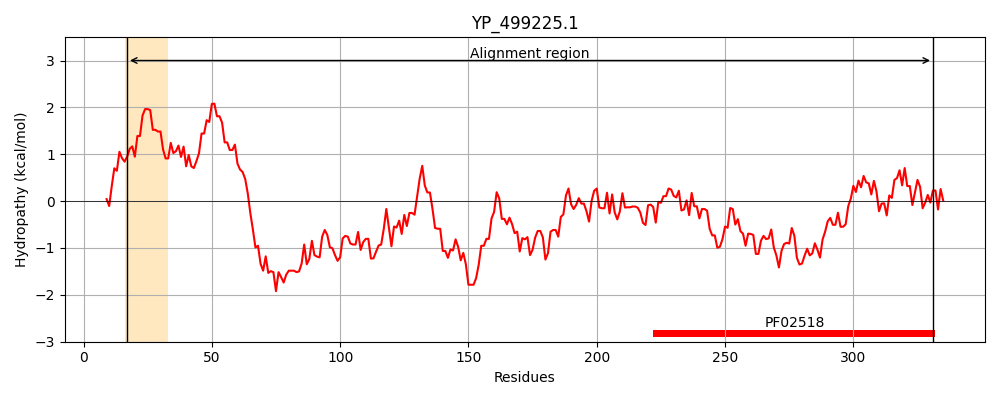
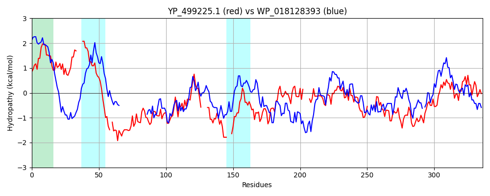

Hit Accession: WP_018128393
Hit TCID: 9.B.238.3.1
Hit Description: gnl|BL_ORD_ID|20890 gnl|TC-DB|WP_018128393.1|9.B.238.3.1 hybrid sensor histidine kinase/response regulator [Balneola vulgaris]
Mach Len: 336
e:0.000000
Query TMS Count : 1
Hit TMS Count: 7
TMS-Overlap Score: 0.900000
Predicted Substrates:None
BLAST Alignment:
Score: 174 , Bit scores: 71 bits, E-value: 9.6e-14, Alignment length: 336, Percentage identity: 21
Query: 17 WIFWILFLNFLMLGISLIDYDFPIDSLFYIVSLN----LSLTMIFLLLTYFKEVKLYKH-FDKDKEIEEIKHKDLAETPFQRHTVDYLYRQISAHKEKVVEQQLQLNMHEQTITEFVHDIKTPVTAM----KLLIDQEKNQERKQA---LLYEWSRINSMLDTQLYITRLESQRKDMYFDYVSLKRMVIDEIQLTRHISQVKG----IGFDVDFKVDDYVYTDIKWCRMIIRQILSNALKYSENFNIEIGT-----ELNDQHVSLYIKDYGRGISKKDMPRIFERGFTSTANRNETTSSGMGLYLVNSVKDQLGIHLQVTSTVGKGTTVRLIFPLQ 331
+I ++ + ++LG ++ +Y FP S Y L+ LSLT + + T + ++K + D+E L + + K + + + + Q + H+++TP+ + +LL + + E+++ L Y + +NS++ L T LE ++ + + + +++ + + + + + K + F+ D ++ + V D+ R I+ +++NA+K++ I I T E + Q V I+D G GIS++D +F + F + N ++ +G+GL + + D + + V S +G+G+T + P +
Sbjct: 108 YILFVSAIAVMVLGFTIYEYLFPQASNQYPDKLSQIRDLSLTSVITIATLGIALYIFKKSYISDRE--------------------KLSKAVLDLKSEKIRAEAADDTKSQFLATISHEMRTPLNGIVGITELLEETNLSDEQRELVTNLAYSSNMLNSLIGDVLDYTLLEDRKLVLQNNEIHIQKELKNLVDMFKPKIDSKNKRIELKFEYDSEIPEIVIGDVTRLRQILVNLVNNAVKFTNEGYIHIKTRFIAEEEDIQRVRFTIEDSGIGISEQDKALLFTKFFRAKTN-DKVEGTGLGLAICRGLIDLMNGAIYVDSKLGEGSTFTIEIPFR 422 | Protein Hydropathy Plots: |
|---|
|  |  |
Pairwise Alignment-Hydropathy Plot:
|
|---|
|  |